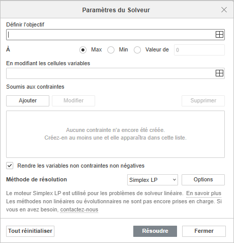
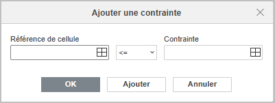
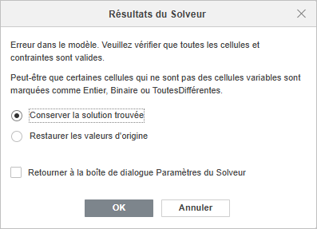

Solveur
L'éditeur de classeurs propose la fonction Solveur permettant de rechercher une solution optimale à un problème en ajustant les valeurs de cellules spécifiées. Le Solveur modifie les valeurs des variables de décision pour maximiser, minimiser ou définir une valeur spécifique dans une cellule d'objectif tout en respectant les contraintes que vous définissez.
Le Solveur est particulièrement utile pour les problèmes de programmation linéaire dans lesquels vous devez optimiser l'allocation des ressources, la planification de la production, l'ordonnancement ou d'autres décisions métier soumises à diverses limitations.
La fonction Solveur utilise la méthode Simplex LP conçue spécifiquement pour les problèmes de programmation linéaire. Cela signifie que votre fonction d'objectif et toutes les contraintes doivent être des fonctions linéaires des variables de décision.
Comment utiliser le Solveur
Pour utiliser la fonctionnalité Solveur, procédez comme suit:
-
Préparez votre feuille de calcul utilisant les éléments suivants:
- Cellules de variables - les cellules contenant les valeurs que le Solveur va modifier pour obtenir la solution optimale. Ces cellules doivent contenir des valeurs initiales (les zéros sont acceptés).
- Cellule d'objectif - une cellule contenant une formule qui dépend des cellules variables. C'est la valeur que vous souhaitez maximiser, minimiser ou fixer à une cible spécifique.
- Cellules de contraintes - des cellules contenant des formules qui calculent des valeurs qui doivent répondre aux certaines conditions (facultatif, mais généralement nécessaire).
- Passez à l'onglet Données et cliquez sur l'icône Solveur dans la barre d'outils supérieure.
- Dans la fenêtre Paramètres du Solveur qui s'affiche, configurez les options suivantes.

- Définir l'objectif : saisissez la référence de la cellule contenant la formule à optimiser. Vous pouvez cliquer directement sur la cellule dans la feuille de calcul à l'aide du bouton Sélectionner des données ou saisissez la référence manuellement. Sélectionnez l'une des options suivantes pour définir l'objectif de l'optimisation:
- Max - pour trouver la valeur maximale possible de la cellule d'objectif.
- Min - pour trouver la valeur minimale possible de la cellule objectif.
- Valeur de - pour que la cellule objectif soit égale à une valeur spécifique. Saisissez la valeur cible manuellement dans le champ prévu.
- En modifiant les cellules de variables: saisissez les références des cellules que le Solveur va modifier pour obtenir le résultat optimal. Ce sont vos variables de décision. Vous pouvez sélectionner plusieurs cellules ou plages de cellules à l'aide dubouton Sélectionner données. Pour sélectionner des cellules non adjacentes, séparez les références par des virgules (par exemple,
B2,B3,B4orB2:B4,C2:C4). - Soumis aux contraintes: cette section vous permet de définir les limitations que la solution doit respecter. Gérez les contraintes à l'aide des boutons suivants: Gérez les contraintes utilisant les boutons suivants:
- Ajouter - cliquez pour créer une nouvelle contrainte. Les paramètres suivants sont disponibles dans la boîte de dialogue des contraintes :

- Référence de cellule - saisissez ou sélectionnez la cellule ou la plage contenant la valeur à contraindre.
- Sélectionnez l'opérateur nécessaire: <= (inférieur ou égal à), >= (supérieur ou égal à), or = (égal à).
- Contrainte - saisissez la valeur limite oula référence d'une cellule contenant la valeur limite.
Cliquez sur OK pour ajouter la contrainte et fermer la boîte de dialogue, ou sur Ajouter pour enregistrer la contrainte actuelle et en ajouter une autre.
- Modifier - sélectionnez une contrainte existante dans la liste et cliquez sur ce bouton pour en modifier les paramètres. La boîte de dialogue s'ouvre avec les valeurs actuelles, vous permettant de modifier la référence de cellule, l'opérateur ou la valeur de contrainte.
- Supprimer - sélectionnez une contrainte existante dans la liste et cliquez sur ce bouton pour la supprimer. La contrainte est immédiatement retirée de la liste.
- Ajouter - cliquez pour créer une nouvelle contrainte. Les paramètres suivants sont disponibles dans la boîte de dialogue des contraintes :
- Rendre les variables non contraintes non négatives : activez cette option pour ajouter une contrainte implicite empêchant les cellules de variables de prendre des valeurs négatives. Lorsque cette option est activée, le Solveur ne prend en compte que les solutions dans lesquelles toutes les cellules de variables sont supérieures ou égales à zéro.
- Méthode de résolution: sélectionnez l'algorithme que le Solveur utilisera pour trouver la solution optimale. La méthode disponible est:
- Simplex LP - la méthode Simplex pour les problèmes de programmation linéaire. Cette méthode est conçue pour les problèmes où la fonction objectif et toutes les contraintes sont des fonctions linéaires des variables.
- Cliquez sur Résoudre pour lancer l'optimisation.
- Définir l'objectif : saisissez la référence de la cellule contenant la formule à optimiser. Vous pouvez cliquer directement sur la cellule dans la feuille de calcul à l'aide du bouton Sélectionner des données ou saisissez la référence manuellement. Sélectionnez l'une des options suivantes pour définir l'objectif de l'optimisation:
- La fenêtre des résultats du Solveur affichera le résultat :

- Une fois la solution trouvée, un message indique que le Solveur a trouvé une solution satisfaisant toutes les contraintes.
- Choisissez si vous souhaitez conserver la solution trouvée (visible dans la feuille de calcul en arrière-plan) ou restaurer les valeurs d'origine.
- Vous pouvez revenir à la boîte de dialogue des paramètres du Solveur pour les configurer en activant les options correspondantes.
- Cliquez sur OK pour conserver les valeurs de la solution dans votre feuille de calcul,
- Cliquez sur Annuler pour restaurer les valeurs d'origine avant l'optimisation.
Solveur vs Valeur cible
Bien que le Solveur et la Valeur cible soient tous deux des outils d'optimisation, ils répondent à des besoins différents.
- La Valeur cible recherche la valeur d'une seule entrée nécessaire pour obtenir un résultat spécifique dans une formule. Cette fonctionnalité ne modifie qu'une seule cellule pour atteindre une valeur cible.
- Le Solveur peut modifier plusieurs cellules à la fois grâce à l'option En modifiant les cellules de variables, et vous permet d'ajouter des contraintes via Soumis aux contraintes. Le Solveur recherche des solutions optimales (maximum, minimum ou valeur spécifique) pour des problèmes plus complexes.
Utilisez la fonctionnalité Valeur cible pour les problèmes simples à une seule variable, et utilisez le Solveur pour les problèmes d'optimisation à plusieurs variables avec contraintes.
Limites
L'implémentation actuelle du Solveur présente les limitations suivantes:
- Simplex LP est la seule méthode de résolution disponible, ce qui exige que toutes les relations soient linéaires.
- Les contraintes de type entier, binaire et différentiel ne sont pas prises en charge.. Toutes les variables sont traitées comme des valeurs continues.